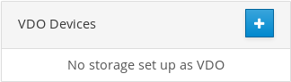
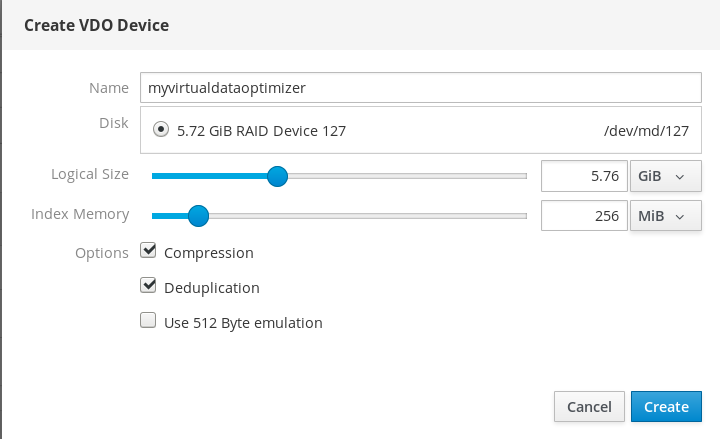
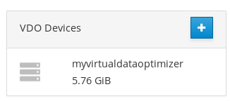
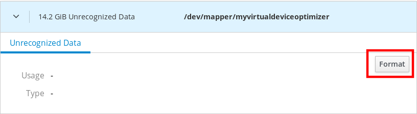

Chapter 9. 使用Web控制台管理Virtual Data Optimizer卷
本章介绍使用RHEL 8 Web控制台的虚拟数据优化器（VDO）配置。阅读后，您将能够：
- 创建VDO卷
- 格式化VDO卷
- 扩展VDO卷
RHEL 8 Web控制台已安装并可访问。
有关详细信息，请参阅安装Web控制台 。
红帽企业Linux 8支持虚拟数据优化器（VDO）。VDO是一种块虚拟化技术，它结合了：
- 压缩
- 有关详细信息，请参阅在VDO中启用或禁用压缩 。
- 重复数据删除
- 有关详细信息，请参阅在VDO中启用或禁用重复数据删除 。
- 精简配置
- 有关详细信息，请参阅精简配置的逻辑卷（精简卷） 。
使用这些技术，VDO：
- 内联存储空间
- 压缩文件
- 消除重复
- 使您能够分配比物理或逻辑存储提供的虚拟空间更多的虚拟空间
- 使您能够通过增长来扩展虚拟存储
可以在许多类型的存储之上创建VDO。在RHEL 8 Web控制台中，您可以在以下位置配置VDO：
LVM
注意
无法在精简配置卷上配置VDO。
- 物理量
- 软件RAID
有关将VDO放置在存储堆栈中的详细信息，请参阅系统要求 。
其他资源
- 有关VDO的详细信息，请参阅重复数据删除和压缩存储 。
本节帮助您在RHEL Web控制台中创建VDO卷。
先决条件
- 要从中创建VDO的物理驱动器，LVM或RAID。
程序
登录RHEL 8 Web控制台。
有关详细信息，请参阅登录Web控制台 。
- 单击存储 。
单击“ VDO设备”框中的+图标。

- 在“ 名称”字段中，输入不带空格的VDO卷的名称。
- 选择要使用的驱动器。
在“ 逻辑大小”栏中，设置VDO卷的大小。您可以将其扩展十次以上，但请考虑创建VDO卷的目的：
- 对于活动VM或容器存储，请使用十倍于卷的物理大小的逻辑大小。
- 对于对象存储，请使用三倍于卷的物理大小的逻辑大小。
有关详细信息，请参阅部署VDO 。
在“ 索引内存”栏中，为VDO卷分配内存。
有关VDO系统要求的详细信息，请参阅系统要求 。
选择“ 压缩”选项。此选项可以有效地减少各种文件格式。
有关详细信息，请参阅在VDO中启用或禁用压缩 。
选择“ 重复数据删除”选项。
此选项通过消除重复块的多个副本来减少存储资源的消耗。有关详细信息，请参阅在VDO中启用或禁用重复数据删除 。
- [可选]如果要将VDO卷用于需要512字节块大小的应用程序，请选择“ 使用512字节仿真” 。这会降低VDO卷的性能，但应该很少需要。如有疑问，请将其关闭。
单击“ 创建”

如果创建VDO卷的过程成功，您可以在“ 存储”部分中查看新的VDO卷，并使用文件系统对其进行格式化。

VDO卷充当物理驱动器。要使用它们，您需要使用文件系统格式化它们。
警告
格式化VDO将清除卷上的所有数据。
以下步骤描述了格式化VDO卷的过程。
先决条件
- 创建VDO卷。有关详细信息，请参阅“在Web控制台中创建VDO卷”一节 。
程序
登录RHEL 8 Web控制台。
有关详细信息，请参阅登录Web控制台 。
- 单击存储 。
- 单击VDO卷。
- 单击“ 无法识别的数据”选项卡。
单击格式 。

在“ 删除”下拉菜单中，选择：
- 不要覆盖现有数据
- RHEL Web控制台仅重写磁盘头。此选项的优点是格式化速度。
- 用零覆盖现有数据
- RHEL Web控制台使用零重写整个磁盘。此选项较慢，因为程序必须通过整个磁盘。如果磁盘包含任何数据并且您需要重写它们，请使用此选项。
在“ 类型”下拉菜单中，选择文件系统：
XFS文件系统支持大型逻辑卷，在线连接物理驱动器而不会中断，并且不断增长。如果您没有其他强烈偏好，请选中此文件系统。
XFS不支持缩小卷。因此，您将无法减少使用XFS格式化的卷。
- ext4文件系统支持逻辑卷，在线切换物理驱动器，不会中断，增长和缩小。
您还可以选择具有LUKS（Linux统一密钥设置）加密的版本，该版本允许您使用密码加密卷。
- 在“ 名称”字段中，输入逻辑卷名称。
在“ 安装”下拉菜单中，选择“ 自定义” 。
“ 默认”选项无法确保在下次引导时安装文件系统。
- 在“ 挂载点”字段中，添加装载路径。
选择启动时安装 。

单击格式 。
格式化可能需要几分钟，具体取决于使用的格式选项和卷大小。
成功完成后，您可以在“ 文件系统”选项卡上查看格式化的VDO卷的详细信息。

- 要使用VDO卷，请单击“ 安装” 。
此时，系统使用已安装和格式化的VDO卷。
本节介绍在RHEL 8 Web控制台中扩展VDO卷。
先决条件
- 已创建VDO卷。
程序
登录RHEL 8 Web控制台。
有关详细信息，请参阅登录Web控制台 。
- 单击存储 。
在VDO Devices框中单击您的VDO卷。
- 在VDO卷详细信息中，单击“ 增长”按钮。
在“ VDO的增长逻辑大小”对话框中，扩展VDO卷的逻辑大小。

屏幕截图中逻辑卷的原始大小为6 GB。如您所见，RHEL Web控制台使您可以将卷增大到十倍以上，并且由于压缩和重复数据删除，它可以正常工作。
- 单击“ 增长”
如果成功生成VDO的过程成功，您可以在VDO卷详细信息中看到新大小。